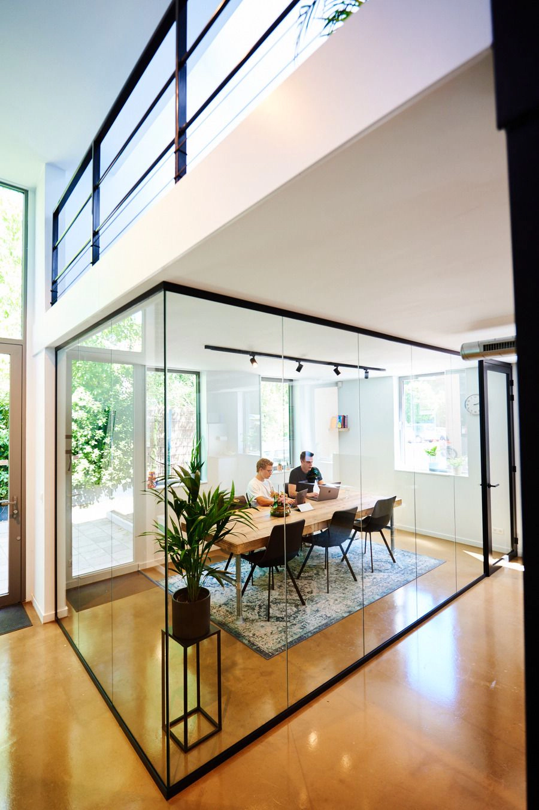

Vacatures > Front-end Developer (medior)
Front-end Developer (medior)
Onze agency is op zoek naar een medior front-end developer die ons joint bij onze missie: zoveel mogelijk mensen verbinden met digitale oplossingen.
Join ons team en werk aan toffe projecten
Als front-end developer ga jij werken aan toffe websites, platformen en webapps. Je zult werken aan strakke-, schaalbare code en meedenken over de nieuwste- en beste technieken. Je zult 80% van de week bezig zijn met development werkzaamheden en 20% events, refinements en persoonlijke ontwikkeling. Binnen Avocado Media zijn wij continu bezig met ontwikkeling. Als bedrijf en op persoonlijk vlak. Je komt te werken in een zeskoppig team van developers en designers in Amsterdam Oost. Ons harde werk wisselen wij graag af met één (oke, minimaal één) potje Mario Kart, tafeltennis en gezellige bedrijfsuitjes.
Waarom Avocado Media?
Naast toffe-, uiteenlopende projecten, een top team en een mooi kantoor in Amsterdam, bieden wij:
-
💶 €2.700 - €3.400 bruto per maand
Als startsalaris, passend bij jouw ervaring en rol.
-
🢠Flexibele uren
In te richten tussen 32 en 40 uur per week.
-
🏝️ 25 vakantiedagen
Bovenop de nationale feestdagen.
-
💻 Een gloednieuwe MacBook Pro
In jouw favoriete kleur.
-
🌱 Zelfontwikkeling
Budget en begeleiding om jouw persoonlijke groei te stimuleren.
-
🌄 Pensioen
Een flexibel in te richten pensioenregeling.
-
🏋️ ClassPass
Een ClassPass abonnement om fit te blijven.
-
🚲 Fiets
Een elektrische fiets of reiskostenvergoeding.
-
🥪 Lunch
Elke dag een goede lunch op kantoor.
-
🉠Events
Teamuitjes- en weekenden, hackathons en vrijmibo’s.